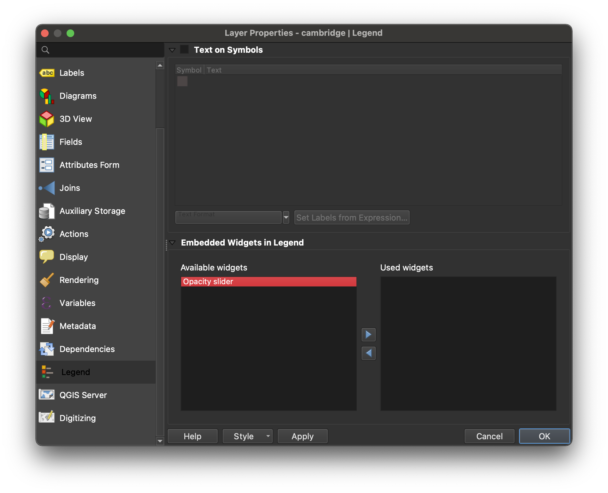

Adjust Layer Opacity in QGIS
In this tutorial you will learn how to adjust a layer’s opacity in QGIS so that you can “see underneath” or through the layer to the map data below.
-
In the QGIS layer list, right-click the layer you would like to adjust the opacity for.
-
Select
Properties. -
In the properties menu, select
Legend.  -
Move
Opacity sliderfromAvailable widgetstoUsed widgetsby selectingOpacity sliderand clicking the right-hand arrowAdd selected widgets.
The text “opacity slider” should move over into the Used widgets box.
-
Select
OK. -
An opacity slider should now appear in your layer list underneath the layer. You can slide this to make the layer more or less transparent.